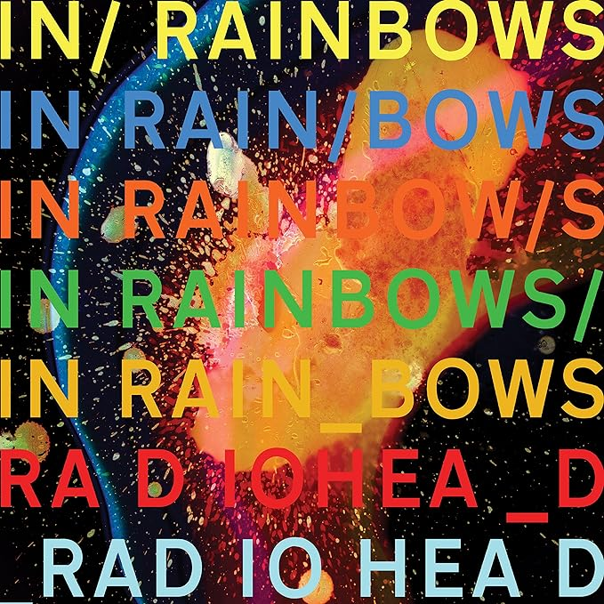

Álbuns Recentes de Radiohead
| Álbum | Sobre | Playlist |
"A Moon Shaped Pool" é o nono álbum de estúdio do Radiohead, lançado 8 de maio de 2016. Ele se destaca por sua atmosfera melancólica e arranjos orquestrais refinados, abordando temas como amor, perda e isolamento. O álbum inclui a faixa "True Love Waits" e foi amplamente aclamado pela crítica, consolidando a banda como uma das mais influentes do rock alternativo. |
"The King of Limbs" é o oitavo álbum de estúdio do Radiohead, lançado 18 de fevereiro de 2011. Conhecido por sua produção minimalista e experimentação com ritmos complexos, o álbum explora uma sonoridade mais eletrônica e atmosférica. Faixas como "Lotus Flower" e "Bloom" destacam-se pelo uso de loops e texturas sonoras intricadas. Embora tenha recebido uma recepção mista inicialmente, o álbum é apreciado por sua inovação e por expandir os limites do som da banda. |
 |
"In Rainbows" é o sétimo álbum de estúdio do Radiohead, lançado 10 de outubro 2007. Marcado por uma produção mais acessível e emocionalmente rica, o álbum é conhecido tanto pela sua sonoridade diversificada quanto pela sua distribuição inovadora, onde a banda permitiu que os fãs pagassem o quanto quisessem pelo download. Faixas como "Nude," "Weird Fishes/Arpeggi," e "Reckoner" mostram uma combinação de guitarras suaves, arranjos eletrônicos e vocais introspectivos. Amplamente aclamado pela crítica, In Rainbows é considerado um dos melhores trabalhos da banda, equilibrando experimentação e acessibilidade de forma única. |
 |
"Hail to the Thief" é o sexto álbum de estúdio do Radiohead, lançado 9 de junho de 2003. O álbum mistura elementos de rock alternativo, eletrônica e arte experimental, resultando em uma sonoridade densa e politicamente carregada. Lançado em um período de turbulência política global, muitas faixas refletem preocupações com temas como poder, controle e medo. Canções como "There There," "2 + 2 = 5," e "Myxomatosis" destacam-se pela energia crua e letras enigmáticas. Embora mais acessível do que seus predecessores imediatos, Hail to the Thief mantém o espírito experimental da banda, sendo aclamado por sua complexidade e relevância temática. |
|---|